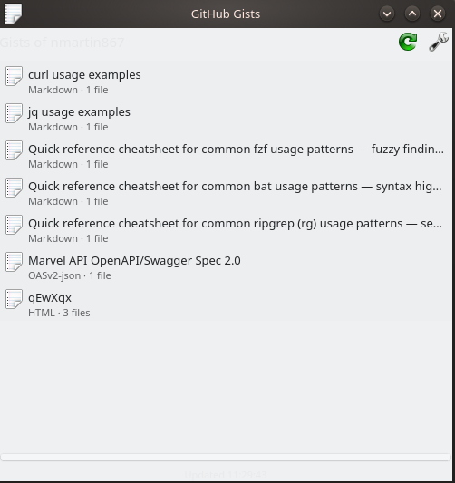

A KDE Plasma 6 widget that lists your GitHub gists in the panel or on the desktop — and opens them without leaving the popup.
Click a gist and its files open right there in the popup, syntax-highlighted via KSyntaxHighlighting — the same engine Kate uses. The browser is one more click away when you want it.

Per user, no build dependencies:
git clone https://github.com/nmartin867/plasma-gist.git
cd plasma-gist
./install.sh
systemctl --user restart plasma-plasmashellThen right-click the desktop or a panel → Add Widgets… → GitHub Gists.
System-wide installs go through CMake and need extra-cmake-modules plus libplasma:
cmake -B build -DCMAKE_INSTALL_PREFIX="$(kf6-config --prefix)"
cmake --build build
sudo cmake --install build| Setting | Meaning |
|---|---|
| Username | Whose public gists to list |
| List my own gists | Uses GET /gists instead — public and secret, requires a token |
| Access token | Fine-grained PAT with read-only Gists access |
| Gists to show | per_page, 1–100 |
| Refresh every | Minutes; 0 disables polling |
Unauthenticated requests to api.github.com are capped at 60/hour per IP. A token raises that to 5000/hour.
~/.config/plasma-org.kde.plasma.desktop-appletsrc. That file is
user-readable only, but it is not a secret store. Moving the token into
KWallet would require adding a C++ QML plugin, which the widget currently
does without.
syntax-highlighting (KF6) for the in-popup code view — present on essentially every Plasma installplasmawindowed com.github.nmartin867.gists runs the applet in its
own window, which is far quicker than reinstalling and restarting the shell.
QML errors go to the journal, not the terminal:
journalctl --user -u plasma-plasmashell -fThe README's Development section
covers the rest — previewing, debugging, resetting settings, and reproducing the
API calls with curl.